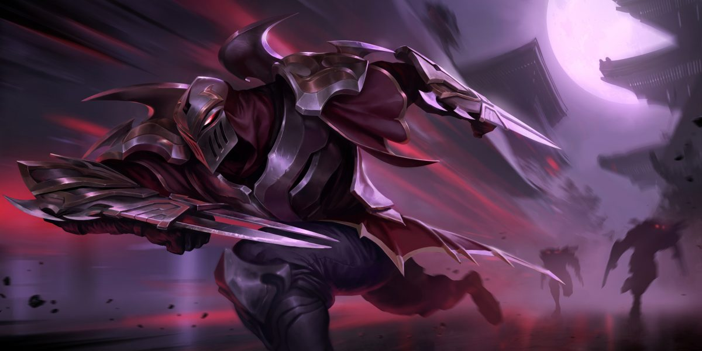
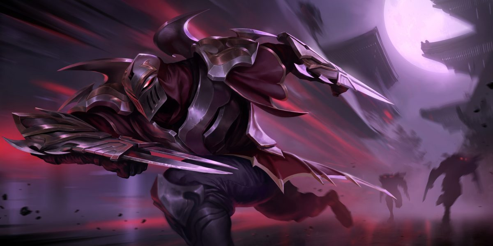

A végletekig kegyetlen, könyörületet nem ismerő Zed az Árnyak rendjének vezére. Ezt a szervezetet maga hozta létre azzal a céllal, hogy Ionia mágikus és harcművészeti hagyományait militarizálva kiűzze a noxusi megszállókat. A háború alatt kétségbeesésében felszabadította a titkos árnyalakot – ez a rosszindulatú szellemmágia legalább olyan veszélyes és romlást hozó, mint amilyen nagy hatalmú. Zed kitanulta ezeket a tiltott technikákat, hogy a segítségükkel pusztítson el mindent, amit a nemzetére vagy az új rendjére nézve fenyegetőnek ítél.
 
